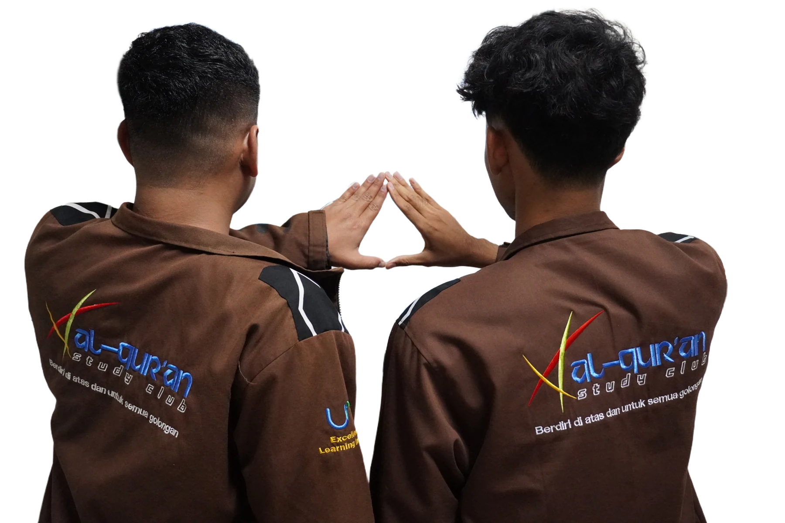

Pembinaan Kader
Al-Qur'an Camp & Grand Opening Pembinaan
Kemah orientasi mahasiswa baru untuk membangun keakraban lintas fakultas, tadabbur alam, serta pemetaan penempatan 11 bidang pembinaan ASC.

Berdiri resmi pada 9 Agustus 2013 di Kompleks Masjid Al-Hikmah Universitas Negeri Malang, UKM Al-Qur'an Study Club (ASC) menjadi kawah candradimuka pembinaan mahasiswa UM. Dari belajar mengeja huruf hijaiyah hingga meraih piala bergilir MTQ Mahasiswa Nasional, semua ditempuh dalam suasana kekeluargaan yang hangat dan inklusif.
Menjadi pilar utama pembinaan delegasi Universitas Negeri Malang dalam mempertahankan gelar Juara Umum MTQ Mahasiswa Nasional melalui kurikulum pendampingan intensif sepanjang tahun.
Mencakup aspek bacaan, hafalan, kaligrafi, retorika dakwah, riset ilmiah, desain aplikasi digital, hingga seni musik Islami.
Terpilih sebagai Ormawa dengan pengelolaan media informasi dan syiar kreatif terbaik di Universitas Negeri Malang.
Program pengabdian masyarakat berbasis moderasi beragama, pengajaran Al-Qur'an, dan pendampingan warga di Kota Malang.
Terbuka bagi seluruh mahasiswa aktif UM dari seluruh jurusan, baik yang baru belajar maupun yang siap berlomba.
Rangkaian agenda tahunan dan semesteran yang mempertemukan pembinaan ruhiyah, kompetisi ilmiah-seni, serta pengabdian langsung kepada masyarakat luas.
Kemah orientasi mahasiswa baru untuk membangun keakraban lintas fakultas, tadabbur alam, serta pemetaan penempatan 11 bidang pembinaan ASC.
Ajang evaluasi hasil belajar dan penjaringan talenta kafilah terbaik Universitas Negeri Malang menuju MTQ Mahasiswa tingkat Regional dan Nasional.
Program pengujian hafalan (tasmi') dan prosesi penganugerahan wisuda bagi mahasiswa penghafal Al-Qur'an kategori 1 Juz, 3 Juz, 5 Juz, hingga 30 Juz.
Kompetisi syiar Al-Qur'an tingkat pelajar dan mahasiswa se-Indonesia yang mempertandingkan cabang tartil, dai muda, kaligrafi, dan karya tulis.
Program penguatan kapasitas organisasi kemahasiswaan melalui pemberdayaan masyarakat, edukasi literasi halal, dan pengajaran TPQ di Kota Malang.
Pengembangan konten dakwah kreatif, publikasi jurnalistik kampus, dan perancangan UI/UX aplikasi Al-Qur'an peraih Juara 1 Ormawa Of The Year.
Sentuh atau klik salah satu bidang di sebelah kiri untuk membaca fokus materi, target pembinaan, dan jadwal pertemuannya di Masjid Al-Hikmah UM.
Dokumentasi dinamika kegiatan mahasiswa Universitas Negeri Malang dalam mengeksplorasi Al-Qur'an dan menebar manfaat nyata bagi masyarakat.
Pengenalan ekosistem Qur'ani dan pembekalan nilai bagi mahasiswa baru di kawasan alam terbuka.
.png)
Pengenalan ekosistem Qur'ani dan pembekalan nilai bagi mahasiswa baru di kawasan alam terbuka.
.png)
Penjaringan bibit unggul kafilah universitas dalam 11 cabang perlombaan seni Qur'ani.
.png)
Momen penganugerahan bagi hafizh dan hafizhah mahasiswa Universitas Negeri Malang.
.png)
Panggung syiar dan temu kreativitas insan Qur'ani antarmahasiswa se-Indonesia di UM.
.png)
Pemberdayaan masyarakat desa melalui literasi Al-Qur'an dan penguatan ekonomi kreatif halal.
.png)
Menghidupkan atmosfer spiritual kampus melalui tadabbur ayat dan persaudaraan lintas jurusan.
Arahkan kursor pada tiap panel departemen di bawah ini untuk membuka rincian peran dan divisi kerja pengurus UKM ASC UM.
Pengelola kurikulum, mentor, dan evaluasi rutin 11 cabang pembinaan Al-Qur'an mahasiswa UM.
Penyelenggara kajian kampus, festival Qur'ani nasional, dan pengabdian masyarakat desa binaan.
Tim kreatif peraih Juara 1 OTY yang menangani identitas visual, media sosial, dan relasi eksternal.
Penjaga solidaritas internal pengurus, kewirausahaan organisasi, dan inventaris sekretariat.
Sama sekali tidak. Kami menyediakan bidang Tahsinul Qur'an yang membimbing mahasiswa dari tingkat paling dasar dengan suasana belajar yang ramah, sabar, dan bebas rasa sungkan.
Ya, 100% terbuka untuk seluruh mahasiswa Universitas Negeri Malang dari fakultas mana pun sesuai semboyan kami: Berdiri di atas dan untuk semua golongan.
ASC memiliki bidang Desain Aplikasi Al-Qur'an (DAQ) untuk peminat UI/UX & pemrograman, Khaththil Qur'an untuk seni visual/kaligrafi, serta Voice of ASC dan Ulul Musthofa untuk seni vokal & hadrah.